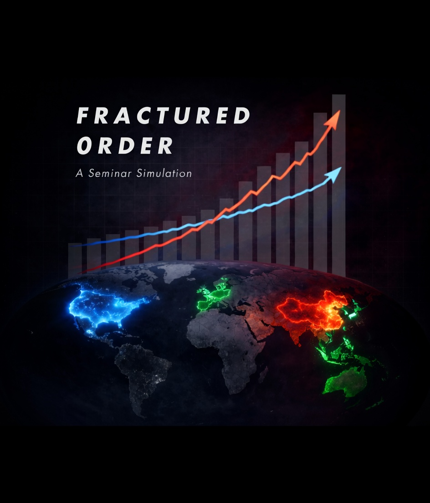
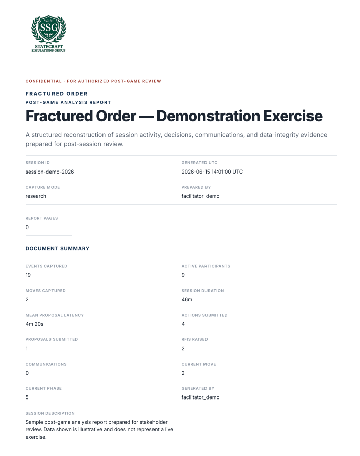

Plenum.
Digital delivery and evidence simulation platform.

Digital delivery and evidence simulation platform.
Why the platform
Information passes between assigned seats in a consistent, structured form, so every action, proposal, RFI, handoff, and decision reads clearly.
The control group sees orientations, actions, proposals, RFIs, communications, and review queues across all teams while retaining adjudication authority.
Everything is captured as detailed, time-stamped, labelled data, ready for after-action review and research.
Plenum structures, routes, records, and exposes evidence. Facilitators, White Cell, and SMEs retain exercise judgment and final review authority.
Platform Use Cases
Keep distributed teams, facilitators, adjudicators, and the Game Master aligned during a structured statecraft exercise.
Make intent, dependencies, implementation routes, coordination choices, and expected effects visible before execution.
Assess how participants frame problems, coordinate, revise, and respond under time pressure.
Trace what changed and why, then compare process, interaction, and outcome evidence across controlled sessions.

Fractured Order Simulation
It keeps guidance, decisions, and evidence connected in one time-stamped exercise record while facilitators and adjudicators retain human control.
Simulation Objectives
Explore the effectiveness of non-military instruments in shaping state behavior and international outcomes.
Economic and investment restrictions.
Economic incentives and trade measures.
Strategic narrative and information campaigns.
Diplomatic and multilateral initiatives.
Who is at the table?
Drives the play, weighing economic statecraft, alliance management, and deterrence in the Indo-Pacific.
European and Indo-Pacific allies who enable, modify, or constrain how far U.S. strategy can proceed.
Pursues technological self-sufficiency and strategic resilience, applying patient, sustained pressure.
Firms and industry bodies whose commercial choices shape the contest across the strategic sectors.
Information flow graph
Every team records an orientation. The Facilitator finalizes it; White Cell clears the gate and preserves the record.
Information flow graph
Blue and Red actions are finalized by the team, adjudicated by White Cell, then returned as authoritative outcomes.
Information flow graph
Green and Industry proposals are reviewed by White Cell before reaching a Blue or Red recipient; the recipient decision returns through the control layer.
Information flow graph
Any team Scribe can ask White Cell for guidance during play. The answer returns to the requester and is retained in the session record.
Information flow graph
Notetakers and Facilitators capture distinct qualitative evidence. White Cell adds rulings and guidance before the evidence is consolidated.
Who is in the room?
Each surface exposes only the controls and records appropriate to that role.
Reviews the Scribe's work, projects and edits it with the team, then submits the finalized artifact.
Records Strategic Orientation, authors actions or proposals, creates RFIs, and forwards completed work.
Records team reasoning, decisions, quotes, and consequential moments as the session unfolds.
Captures team dynamics, relationships, and supporting qualitative evidence for the session record.
Session Data Export
Research schema 1.6.0 keeps structured content, qualitative context, chronology, lineage, quality, and analytical outputs linked in one validated archive.
{
"schemaVersion": "1.6.0",
"session": { /* metadata, teams, phase */ },
"evidence": [
"orientations", "actions", "proposals",
"rfis", "adjudications", "timeline"
],
"quality": "data_quality_summary.json",
"lineage": "decision_lineage.csv",
"context": "scenario_context.json",
"derivedLayers": [
"outcome_taxonomy",
"training_rubric",
"network_metrics",
"turning_points"
],
"reports": [ "report.html", "reports/*.html" ]
}
Session identity, move, phase, timers, active seats, role grants, and runtime configuration.
Orientations, forecasts, actions, proposals, move records, revisions, and final workflow status.
RFIs, answers, proposal routing, recipient decisions, communications, interaction edges, and latency.
Notes, quotes, moments, team dynamics, alliance tracking, quick capture, and recording metadata.
White Cell rulings, PLI-routed Macro, NI/escalation, Dip/Info, and Glasl review states, chronology, lineage, metrics, and quality events. PLI augments rather than replaces human authority.

Analysis & Publication
Human-readable reports and machine-readable evidence are generated from the same validated session dataset rather than separate narratives.
Trace how strategy became action, where coordination changed a decision, and which events formed the decision chain.
Surface policy levers, tradeoffs, partner responses, implementation friction, and recipient decisions.
Highlight turning points, coalition patterns, escalation paths, relationship effects, and decision tempo.
Use role handoffs, revisions, rubric evidence, participation signals, and learning gaps to assess the exercise.
Playthrough targets
White Cell reviews all four team artifacts before the Move 1 gate advances.
Blue and Red submissions show as adjudicated only after White Cell records deliberation.
Green's European consortium proposal moves through White Cell to Blue, where Blue selects Accept.
The answer leaves the pending queue, returns in Responses, and creates a visible timeline event.